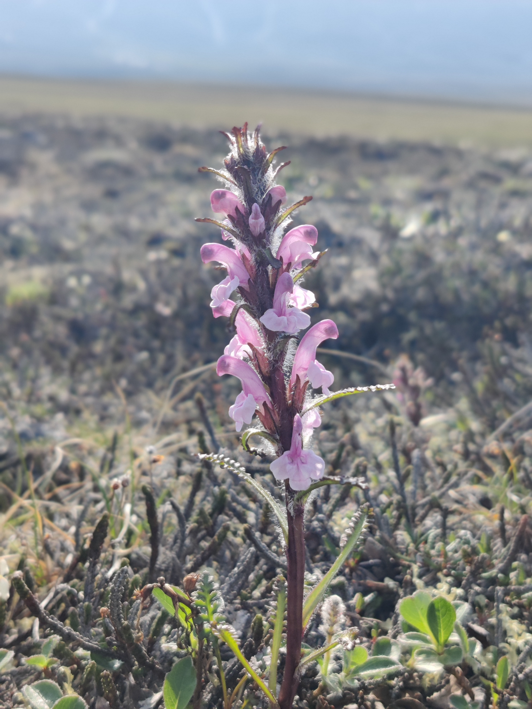
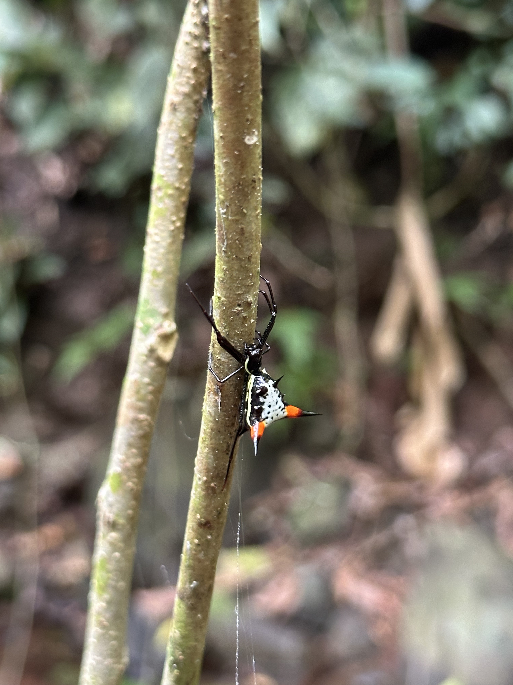
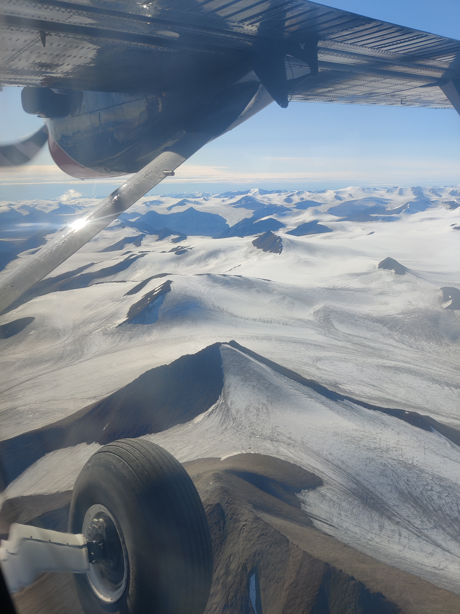
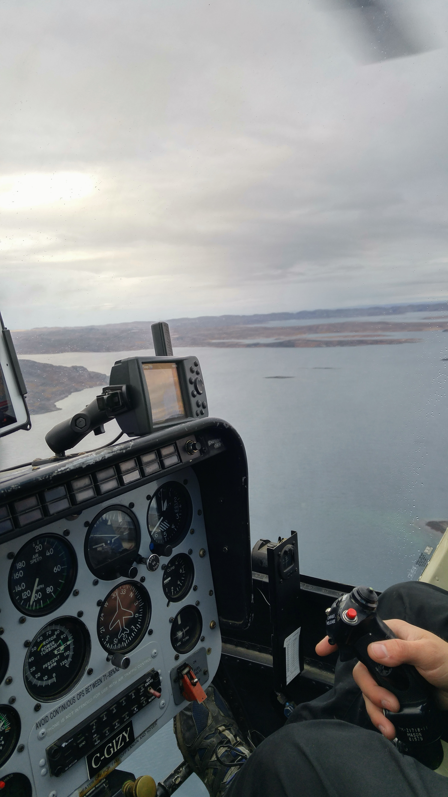
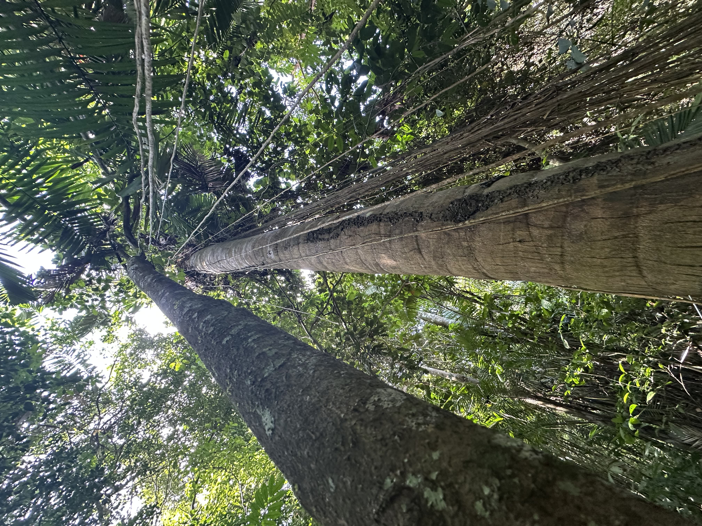
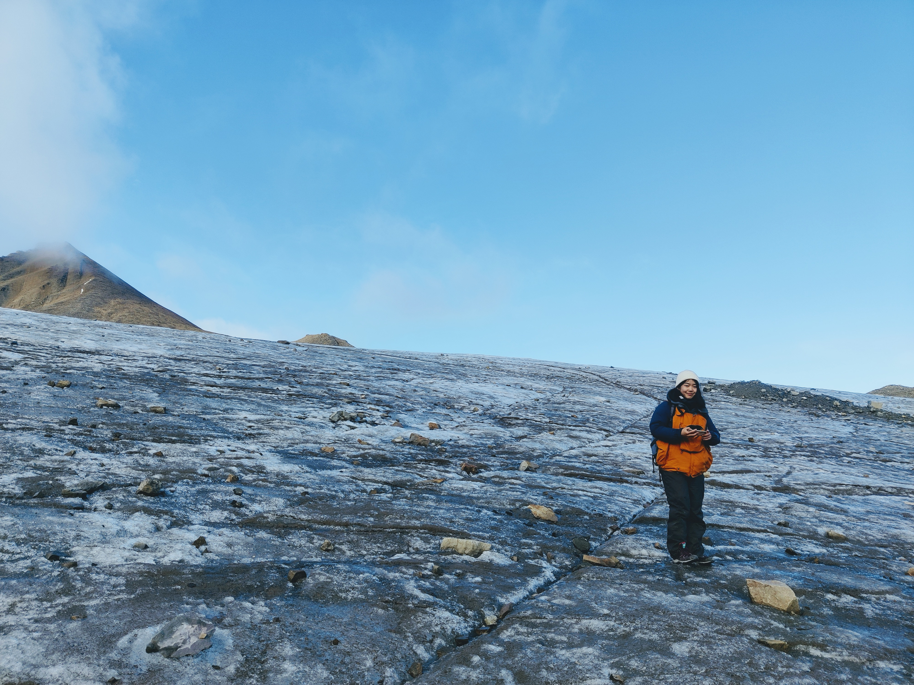

Training & research questions
-
2019 · Université Laval, Québec
M.Sc. Quaternary aquatic paleoecology in the Canadian Arctic
Laboratoire de paléoécologie aquatique · Centre d'études nordiques · Département de géographieI began my training in physical geography and Quaternary paleoecology through research on the freshwater ecosystems of Nunavut and Nunavik. For my M.Sc. at the Centre d'études nordiques, I reconstructed the postglacial history of the Fury and Hecla Strait region in Nunavut, in the Canadian High Arctic, using lake sediments. We analyzed marine and freshwater diatoms together with geochemical records preserved in the sediments, which allowed us to establish the first chronology of regional deglaciation. This work also helped clarify the history of marine inundation, the onset of glacial isostatic adjustment, and associated changes in relative sea level. It also established the timing of the postglacial marine reconnection between Atlantic and Pacific waters, with important implications for the exchange of marine flora and fauna between the two oceans. I have remained active in Arctic research through field expeditions and collaborative projects with teams at the University of Tokyo and the National Institute of Polar Research in Japan, as well as colleagues at Université Laval and the Centre d'études nordiques, with further work and collaborations continuing today.
-
2024 · University of Illinois Urbana-Champaign
Ph.D. Deep learning for pollen morphology and phylogenetic inference
Punyasena Lab · Department of Plant Biology · School of Integrative BiologyMy doctoral research developed evolutionarily aware neural networks that extract phylogenetically and ecologically meaningful information from pollen morphology. Combining superresolution imaging with deep learning, I built methods that bridge molecular phylogenetics and morphological analysis, making it possible to place unknown or extinct plant morphotypes onto reference phylogenies from morphology alone, detect cryptic speciation and extinction, and trace adaptations that arose in plant populations over evolutionary time. The same imaging and image-processing methods allowed me to reconstruct changes in grassland diversity and photosynthetic composition over tens of thousands of years in East Africa. A major focus of this work was the evolution of the Podocarpaceae, one of the most remarkable and diverse conifer families. This includes the diversification of the clade, its migrations as continents drifted and the planet's geography was reshaped, and the adaptations that emerged under changing environmental conditions. Reconstructing that history depends on robust molecular phylogenies, a well-resolved fossil record, and, most importantly, tools that can connect the two and rigorously analyze very subtle phenotypic variation. This work grew from a close collaboration with the Smithsonian Tropical Research Institute (STRI), which continues today.
-
2025 – present · Smithsonian Institution
Postdoctoral Research Fellow: Machine learning and biodiversity informatics for macroecology
Chief Data and AI Office, Office of Digital & Innovation · Washington, D.C.Currently, at the Smithsonian, I work at the interface of ecology, evolution, and biodiversity informatics. A few questions sparked many of the ideas behind this project: why are conifers so much more widespread in North America than in South America, under what conditions do South American conifers succeed beyond expectation, and where along this range are conifer distributions and their traits driven by stochastic versus deterministic processes? To address these, I develop new methods, principally using large language models, to extract anatomical, physiological, and genomic characteristics from conifer species worldwide, and integrate them with forest-plot data to model trait-environment relationships. This work builds new ways to extract trait and diversity data and reveals hidden correlations among anatomical and physiological traits, genomic architecture, and the environment. Most importantly, it lets us address open questions in ecology and evolution: the role of stochasticity versus determinism in shaping where species and their traits occur, and how much particular traits matter for a species' ability to establish in a given environment. The project focuses largely on conifers worldwide, but the methods generalize across the tree of life, with ongoing collaborations extending this work to other clades.
-
From January 2027 · American University of Beirut
Assistant Professor, Bioinformatics & Computational Biology
Department of Biology · Faculty of Arts and SciencesIn my incoming faculty position, I will build a research program that extends many of the methods I have developed to the biodiversity of Lebanon and the eastern Mediterranean. The program will focus primarily on plant diversity, while expanding to fungi and animal groups through collaborations. I aim to understand why endemic and regional species occur under particular environmental conditions, how their traits have evolved, what evolutionary processes have shaped those traits, and how lineages are related, using molecular data to resolve their phylogenetic relationships. More broadly, I plan to combine molecular, phenotypic, and environmental data to reconstruct trait evolution and test how environmental pressures, genomic change, and lineage history have shaped biodiversity across the region. I also aim to develop new methods, including deep-learning approaches, for estimating phylogenies, quantifying phylogenetic uncertainty, and reconstructing ancestral sequences and traits.






